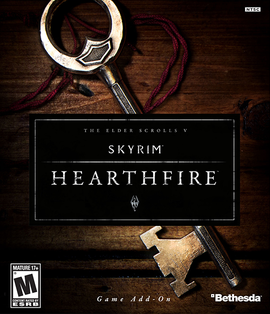

O jogo Skyrim possui 3 DLC's(Downloadable Content)sao conteudos extras no jogo para permitir que o jogador possa ter acesso a lugares novos, lutar com novos monstros e outras quests e cidades para fazer e conhecer, porem para alguns jogos exigem o pagamento desse conteudo.
Para Skyrim existem 3 DLC's, sendo elas: Dragonborn, Hearthfire e Dawnguard, cada uma delas ou libera uma parte nova do mapa ou da acessos a novos itens, armas e quests no mapa, todas as DLC's sao composta de quests secundarias.
DragonBorn
A trama envolve viajar para a ilha de Solstheim eo retorno de um misterioso ex-dragão Priest chamada Miraak, régua de uma só vez da ilha. Ao contrário dos antigos sacerdotes do dragão de Skyrim, ele é supostamente o primeiro indivíduo a ser dotado com o sangue de dragão, muito parecido com o Dragonborn, e possui a capacidade de absorver almas Dragão
Heathfire
The Elder Scrolls V: Hearthfire é o segundo oficial add-on para o quinto na série The Elder Scrolls, Skyrim.
Lançado para o Xbox 360 em 04 de setembro de 2012. Hearthfire se concentra em torno da compra de terras e concepção, construção e manutenção de uma herdade. A opção de contratar mordomos, motoristas de carruagem e um bardo pessoal também estão disponíveis. Com cinco casas compráveis pré-construídos já presente em Skyrim, é agora possível à propriedade em todos os deter, exceto Winterhold.

Dawnguard
Introduzido em Dawnguard são duas árvores de habilidades únicas, um para o vampirismo anotado como "Vampire Lord" e um para a licantropia.
Vinte e duas missões em destaque no plug-in; doze existir na missão principal, com várias missões laterais opcionais. Alguns repetíveis, quests radiantes também pode ser concluída. Os garfos questline em "Uma Nova Ordem", onde a fidelidade entre o Clã Volkihar eo Dawnguard deve ser selecionado. Escolha de lado é irreversível.